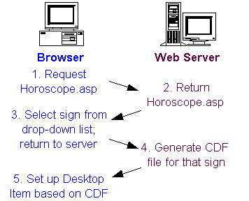
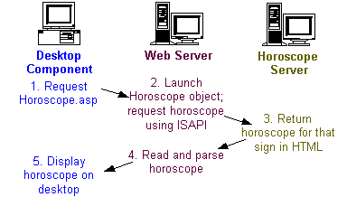

|
| ||
|
| ||
Kannan Ramasubramanian
Servinet Consulting Group
June 11, 1998
 Download the Daily Horoscope application files (zipped, 1,650K).
Download the Daily Horoscope application files (zipped, 1,650K). 
Contents
Introduction
The Application
Key File #1: Horoscope.asp
Key File #2: Horoscopecdf.asp
Key File #3: Horoscope.cls
Adapting Daily Horoscope to Other Uses
For More Information
Summary
Appendix: How to Install Daily Horoscope on Your Own Server
The Daily Horoscope is a desktop component that provides subscribers with an update of what the stars hold in store for them each day. It requires that users have Microsoft® Internet Explorer 4.0 running on their machines with Active Desktop™ interface enabled. While I make no claims about the accuracy of the forecasts (which appear courtesy of Infospace  ), Daily Horoscope certainly demystifies the various technologies it incorporates. And even though it is little more than a few lines of text, it provides an excellent starting-point to learn about several cool and useful technologies, most notably Active Desktop™, the Internet Server API (ISAPI), Active Server Pages (ASP), and Visual Basic® (and its counterpart Visual Basic® Scripting Edition [VBScript]). It could also easily be modified to generate a simple "Message of the Day" for broadcast over a corporate intranet.
), Daily Horoscope certainly demystifies the various technologies it incorporates. And even though it is little more than a few lines of text, it provides an excellent starting-point to learn about several cool and useful technologies, most notably Active Desktop™, the Internet Server API (ISAPI), Active Server Pages (ASP), and Visual Basic® (and its counterpart Visual Basic® Scripting Edition [VBScript]). It could also easily be modified to generate a simple "Message of the Day" for broadcast over a corporate intranet.
This article will walk you through a description of the application, and a detailed explanation of the key files and code snippets. It also points you to more detailed material on relevant subjects such as the Internet Server API. You can also install Daily Horoscope on your own Web server. We've included the Daily Horoscope code, and instructions for installing Daily Horoscope on your server are in the Appendix.
Daily Horoscope resides on a Web server alongside your other ASP, CGI, and ISAPI scripts. It can be viewed as running two discreet processes: one, visitors log on to the Web site and subscribe to the Horoscope delivery service, and two, the Channel Definition Format (CDF) file fetches the day's horoscope and updates the desktop component. Figure 1 shows the subscription process and Figure 2 shows the daily update process.

Figure 1. The subscription process

Figure 2. The daily update process
The application flow consists of the following steps:
Let's take a closer look at the files that make Daily Horoscope work. Horoscope.asp is the entry point to the application, the file that users initially access. The code listing below presents its introductory section:
<% if request("sunsign") = "" then %>
<HTML>
<TITLE>Horoscope for the day</TITLE>
<FORM ACTION="horoscope.asp" METHOD="POST">
<BR><BR>
<TABLE>
<TR>
<TD>
<STRONG>Please choose your sign: </STRONG>
<SELECT NAME="sunsign">
<OPTION VALUE="aries">Aries</OPTION>
<OPTION VALUE="taurus">Taurus</OPTION>
<OPTION VALUE="gemini">Gemini</OPTION>
<OPTION VALUE="cancer">Cancer</OPTION>
<OPTION VALUE="leo">Leo</OPTION>
<OPTION VALUE="virgo">Virgo</OPTION>
<OPTION VALUE="libra">Libra</OPTION>
<OPTION VALUE="scorpio">Scorpio</OPTION>
<OPTION VALUE="sagittarius">Sagittarius</OPTION>
<OPTION VALUE="capricorn">Capricorn</OPTION>
<OPTION VALUE="acquarius">Acquarius</OPTION>
<OPTION VALUE="pisces">Pisces</OPTION>
</SELECT>
</TD>
<TD>
<INPUT TYPE="SUBMIT" VALUE="Submit">
</td>
</TABLE>
</FORM>
</HTML>
<% else %>
<% if request("sunsign") <> "aries" and
request("sunsign") <> "taurus" and
request("sunsign") <> "gemini" and
request("sunsign") <> "cancer" and
request("sunsign") <> "leo" and
request("sunsign") <> "virgo" and
request("sunsign") <> "libra" and
request("sunsign") <> "scorpio" and
request("sunsign") <> "sagittarius" and
request("sunsign") <> "capricorn" and
request("sunsign") <> "aquarius" and
request("sunsign") <> "pisces" then %>
<% response.redirect("horoscope.asp") %>
<% end if %>
The first line of Horoscope.asp checks for the value of the variable sunsign. If sunsign is blank, as will be the case when the user connects the first time, Horoscope.asp displays a standard HTML drop-down form from which the user can choose their sign. Note that the <ACTION> tag has a value of "Horoscope.asp", which references the same page. It is standard practice in ASP for a program to call itself to action. Thus, after the user chooses the zodiac sign and selects Submit, Horoscope.asp is called again. This time, however, sunsign will contain the sign preference of the user, and the else condition will execute, which checks to make sure sunsign is a valid astrological sign. If it isn't, Horoscope.asp redirects the browser back to itself again and re-starts the process from the beginning.
The next code fragment (shown below) is the last and trickiest piece of Horoscope.asp. The first line checks to see if sunsign is empty. If it isn't (which it shouldn't be, since to get to this point a valid sign had to be chosen), the application redirects the browser to Horoscopecdf.asp and passes the sunsign value by attaching the "?sunsign=" syntax to the URL. Internet Explorer identifies Horoscopecdf.asp as a CDF file (see below), that it's an Active Desktop Item, provides background on the subscription, and so forth.
<% if request.form("sunsign") <> "" then %>
<% response.redirect("horoscopecdf.asp?sunsign="
& request("sunsign")) %>
<% else %>
<% Set horoscopeObject = server.createobject("Aslan.Horoscope")%>
<% horoscopeObject.sunsign = request("sunsign") %>
<% response.write("<HTML>") %>
<% response.write("<TITLE>" & ucase(request("sunsign"))
& " - Horoscope for the day</TITLE>") %>
.
.
.
<% response.write (horoscopeObject.GetHoroscope) %>
.
.
.
<% end if %>
<% end if%>
The second part of the above code, which instantiates the Aslan.Horoscope ActiveX® control, will be executed if Horoscope.asp has been called by the Active Desktop component. The remaining code returns some HTML formatting statements and calls the GetHoroscope() method, which will connect to the InfoSpace site and fetch the horoscope content.
As we mentioned above, Horoscopecdf.asp is a dynamically generated CDF file that configures the Active Desktop component on the user's machine. It is called by Horoscope.asp once for each subscriber.
<?XML version="1.0"?>
<% MyURL = "http://" & Request.ServerVariables("SERVER_NAME")
& "/horoscope/horoscope.asp?sunsign="
& request("sunsign")%>
& request("sunsign")%>
<Channel href="<% =MyURL%>">
<SCHEDULE>
<IntervalTime DAY="1" />
<EarliestTime HOUR="12" />
<LatestTime HOUR="18" />
</SCHEDULE>
<ITEM href="<% =MyURL%>">
<Title>The A3 Horoscope</Title>
<USAGE VALUE="DesktopComponent">
<OpenAs VALUE="html" />
<Width VALUE="623" />
<Height VALUE="404" />
</USAGE>
</ITEM>
</Channel>
The first line of the Horoscopecdf.asp identifies it as an XML file (CDF is a subset of XML or, in XML parlance, a vocabulary) and is treated differently from standard HTML. Internet Information Server treats it as a regular ASP file because of the .asp extension, which allows us to use standard ASP code in it as well.
The section of the Horoscopecdf.asp within the <SCHEDULE> tags informs Internet Explorer about the schedule for updating the desktop component, while the <USAGE> tags relate that it's an Active Desktop component with some formatting information. Follow this link for more information on the structure of Active Desktop CDF files.
To be precise, the Daily Horoscope component is a class within the OLE server component Aslan.dll. The most important piece of code in the Daily Horoscope OLE server is the Horoscope class module, Horoscope.cls. Horoscope.cls uses the Internet Server API, which opens a whole new world of potential applications beyond Daily Horoscope (see, for example, Take IIS Customization to the Next Level by Writing ISAPI Filters and Script Interpreters  , or Taking the Splash: Diving into ISAPI Programming
, or Taking the Splash: Diving into ISAPI Programming  .
.
First we have to make our Daily Horoscope server declarations. The first three declarations are required to use the Internet Server API, and include function declarations for initializing an Internet connection, closing an open Internet connection handle, opening an Internet URL, and reading a file from a URL after a connection has been established.
We then declare all the constants for the various flag options we will use when we call the Internet functions and the variables we will use within the ActiveX component.
Private Const INTERNET_OPEN_TYPE_PRECONFIG = 0 ' indicates to use config info from registry Private Const INTERNET_FLAG_EXISITING_CONNECT = &H20000000 Private Const scBlankStr = "" ' blank string constant Private zodiac As String Private hInternetSession As Long ' internet session handle Private bInitialized As Boolean ' object initialization flag Private hUrlFile As Long ' utl handle Private sContents As String ' html page contents Private sUserAgent As String ' user agent in HTTP protocol
Next, we expose the GetHoroscope() method. As should be evident from the code snippet below, GetHoroscope() does not take in any parameters. Instead, it calls several functions that access the appropriate InfoSpace URL, strip out extraneous HTML, and interpret error-handling codes.
First, GetHoroscope() declares objHoroscope a "Horoscope object" and sUrl a character string. It then checks to see if the zodiac property of the control has been set; if not, it assigns "Scorpio". (This is just additional bounds-checking, because Horoscope.asp should pass a valid zodiac property.) We then initialize the Horoscope object using Init(), and set sUrl to download the horoscope content by appending the value of zodiac to a base InfoSpace URL (InfoSpace devotes one page to each sign). The ReadUrl() method is called (see below) which, if True (successfully read), sets a global variable pointing to the downloaded horoscope content, which itself has been parsed by GetParsedHTML(). If false (not read successfully), the code generates a specific error message generated by TranslateErrorCode().
Public Function GetHoroscope()
' Declare Horoscope object variable
Dim objHoroscope As New Horoscope
Dim sUrl As String
' Set default Zodiac sign to Scorpio -
' (A little bit of narcissism shouldn't hurt)
If zodiac = "" Then
zodiac = "scorpio"
End If
'Instantiate Horoscope object
objHoroscope.Init
' Create the URL to connect to, using the zodiac property of the object
sUrl = "http://in-100.infospace.com/_1_165483437__info/Horo/"
& zodiac & ".html"
' Fetch the HTML File from the URL
If objHoroscope.ReadUrl(sUrl) = True Then
' Set the return string to the stripped down HTML File
GetHoroscope = objHoroscope.GetParsedHTML(zodiac)
Else
' if ReadUrl method returned false, get error message and display
GetHoroscope = "<h2>Error - " & TranslateErrorCode(Err.LastDllError)
& "! Please contact Sys Admin.</H2>"
End If
' Return control
End Function
The Init() function carries out the initialization routines for the Horoscope object. Since Horoscope goes out onto the Web to fetch content, it qualifies as a Web browser application and thus requires an identification when it communicates with a Web server. Horoscope identifies itself as "Horoscope component v1.0" via the sUserAgent variable. The call to InternetOpen() returns a handle which sets the bInitialized variable to True or False. InternetOpen() is a function of the Internet Server API that establishes an Internet session based on parameters such as the Agent Identification, Access Type, Proxy server names, and more. (For a good starting point to learn about the Internet Server API, check out The Internet Server API (or How to Get There from Here, by Robert Coleridge.)
Once Init() has done its stuff, ReadURL() is called. ReadURL() calls the Internet Server API function InternetOpenURL(), and instructs it to use an existing Internet connection (rather than open a new one). ReadURL() begins downloading content from the InfoSpace URL 2,048 bytes at a time (storing each pass into sReadBuffer), and continues until no more content is available (by checking whether sReadBuffer is blank).
Each iteration through the loop appends sReadBuffer's content to the global variable sContents and increments the lTotalBytesRead variable with the number of bytes read in each pass. The value parameter lNumberOfBytesRead is set when InternetReadFile() is called. The Binary variable bDoLoop is used as a flag to see if InternetReadFile() returns True (which means the end of the file has been reached). If the whole process of connecting to the URL and downloading its content is successful, ReadURL() returns True. GetHoroscope() uses this return value determine whether to parse the content (using GetParsedHTML()) or display an error message (using TranslateErrorCode()).
Because the Daily Horoscope is implemented as a class module within Aslan.dll, it will have a Terminate event associated with it (as all class modules do). It is good programming practice to execute other clean-up code (releasing resources, resetting variables, and so forth) within this event, which will be called every time a particular class (in our case, Horoscope.cls) is terminated.
Private Sub Class_Terminate() Term End Sub
Term is where we store our clean-up code. It closes the Internet handle created when we initialized our Internet connection. It uses the Internet Server API function InternetCloseHandle(), and resets the bInitialized variable to False.
Public Sub Term()
On Error Resume Next
If InternetCloseHandle(hInternetSession) Then
bInitialized = False
End If
End Sub
If ReadURL() successfully accesses and downloads the content of the InfoSpace URL, GetParsedHTML() is called to take that content and prep it for display on the desktop. GetParsedHTML() takes in the zodiac parameter (remember that?), but as a string, and uses standard Visual Basic string-manipulation functions to extract the horoscope content from sContents. For example, we know that in the downloaded page, the horoscope content starts from the HTML tag <H1>. GetParsedHTML() searches for the string "<H1>" and returns all content from that point on. In the event that the page format has changed and it can't find <H1>, it returns the entire page.
Property Get GetParsedHTML(zodiac As String) As String ' strip off the first part of the HTML ' and start from the zodiac heading tokenToCheckFor = "Horoscope for " & zodiac startPos = InStr(1, sContents, tokenToCheckFor) ' if error, then start from the beginning If startPos = 0 Then startPos = 1 ' strip off last part of HTML tokenToCheckFor = "[" endPos = InStr(startPos, sContents, tokenToCheckFor) ' if error, then show till the end If endPos = 0 Then GetParsedHTML = Mid(sContents, startPos) Else GetParsedHTML = Mid(sContents, startPos, endPos - startPos) End if End Property
The beauty of server objects lay in the fact that they expose properties and methods to the applications that call them. For example, Daily Horoscope exposes the GetHoroscope() method. We can create a property for our component using the Visual Basic Property declaration. In our case, the astrological sign is exposed as a property of Daily Horoscope . This allows pages that call Daily Horoscope to set zodiac as the desired sign and invoke the GetHoroscope() method to retrieve its associated horoscope. When the calling application sets the property, we use the Visual Basic command Property Let. In our case, we use Let to assign the zodiac value to zodiac when we instantiate the object.
Property Let SunSign(sunsignFromObjectCall As String)
' Get the sunSign property from the call to the object
' in calling app and set zodiac variable
zodiac = sunsignFromObjectCall
End Property
The final portion of our Visual Basic code is the TranslateErrorCode() function. Because the Internet Server API responds with terse error numbers when calls do not go as planned, we need to translate those numbers into phrases that have meaning for users. TranslateErrorCode() returns a descriptive error message for all the possible error codes generated by the various ISAPI calls.
As much as you might enjoy having a horoscope delivered to your site, lots of other uses of the Daily Horoscope Desktop are possible. The most obvious is a "Message of the Day" for corporate intranets. Many CEOs would enjoy the opportunity to broadcast a message about company activities, news, or even their own thoughts, quotes, or exhortations (remember, somebody's buying all the motivational stuff advertised on those in-flight catalogs).
Adapting the Daily Horoscope code for the Message Of The Day application is straightforward. The crux of the application is the Internet API component that fetches content from any given URL and extracts any HTML text that lies within specified text tags. To create your own Message of the Day, place the message within an HTML-style tags (such as <!--MOTD and <!--/MOTD) and tell the ISAPI functions to search for those tags. Also, you need to replace the URL in the component code to point to the intranet server that contains the Message Of The Day. Pretty simple, huh?
If you're interested in learning more about the Active Desktop, a good place to start is another MSDN Online Web Workshop article, The Active Desktop for Internet Explorer 4.0. It also covers lots of related topics such as Active Channels, the Information Delivery API, as well as the integration issues of the browser and the Windows® shell.
For more information on ASP, there's a whole section devoted to it in Site Builder's Server area.
I covered links to ISAPI articles earlier.
Daily Horoscope is a simple application that illuminates the possible interplay between Internet Explorer, Active Desktop, Active Server Pages, Visual Basic, and the Internet Server API. Daily horoscope delivery is just one of its uses. It is an interesting application that serves to demonstrate the power, flexibility, and ease-of-use of the Active Desktop Technology in developing and implementing applications that deliver information of interest directly to your virtual doorstep.
Remember that error-checking and recovery are as important in a Web application as they are to any "traditional" application. The error-handling routines implemented in this example are quite basic. Before you deploy the application in a production environment, I would recommend some more error-checking and recovery using VBScript's error-trapping features (such as ON ERROR). Also bear in mind that the horoscope content appears courtesy of InfoSpace.com. The format of the page may change, or the site may cease operation.
Please send comments and suggestions about the Daily Horoscope Application to kanna@servi.net. I would also like to hear about other modifications and feature additions that you decide to make to the application.
Kannan Ramasubramanian graduated from the Government College of Technology, India, with a BS in Computer Technology. He currently works with Servinet Consulting Group  of San Francisco, CA, as a Technical Program Manager, where he provides Internet/intranet, E-Commerce, and Web-related development tools and services to clients.
of San Francisco, CA, as a Technical Program Manager, where he provides Internet/intranet, E-Commerce, and Web-related development tools and services to clients.
Follow these steps to install Daily Horoscope on your system (you need to be running IIS 3.0 or later).
Did you find this material useful? Gripes? Compliments? Suggestions for other articles? Write us!
© 1999 Microsoft Corporation. All rights reserved. Terms of use.